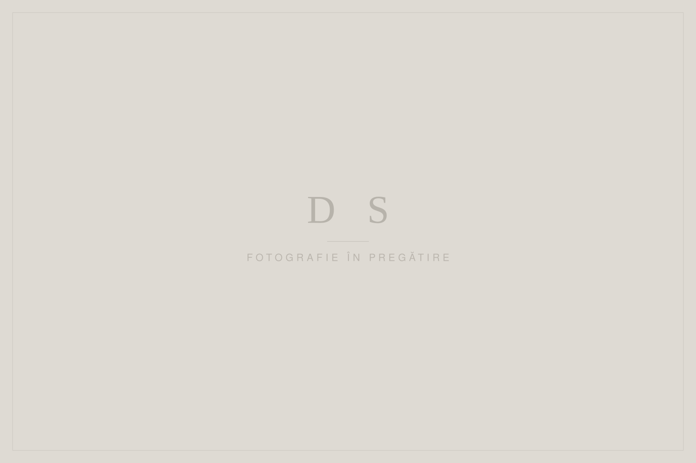
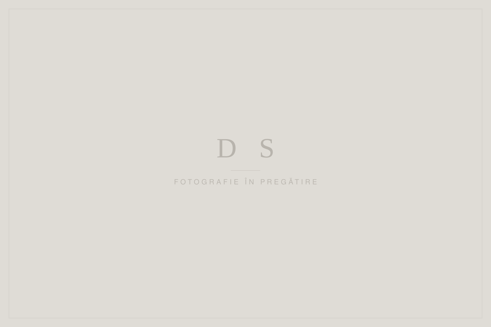

Portofoliu
Povești spuse prin fotografie
O selecție dintre proiectele noastre — nunți, evenimente și ședințe foto, documentate cu discreție și atenție la detalii.

Ana + Mihai
O nuntă documentată discret, cu lumină caldă și emoții sincere.
Vezi proiectul →
Ioana + Andrei
O zi întreagă alături de oameni dragi, de la pregătiri până la ultimul dans.
Vezi proiectul →
Botezul Sofiei
O sărbătoare de familie blândă, fotografiată cu discreție și căldură.
Vezi proiectul →
O seară aniversară
O aniversare printre prieteni, cu lumini calde și o atmosferă relaxată.
Vezi proiectul →
Elena + Victor
Portrete naturale de cuplu, fotografiate în lumina caldă a serii.
Vezi proiectul →
Ședință foto de familie
O dimineață în familie, cu joacă, apropiere și râsete sincere.
Vezi proiectul →Povestea voastră merită păstrată.
Spuneți-ne ce pregătiți, iar noi vă vom ajuta să transformați momentele importante într-o poveste vizuală care va rămâne.
Verifică disponibilitatea